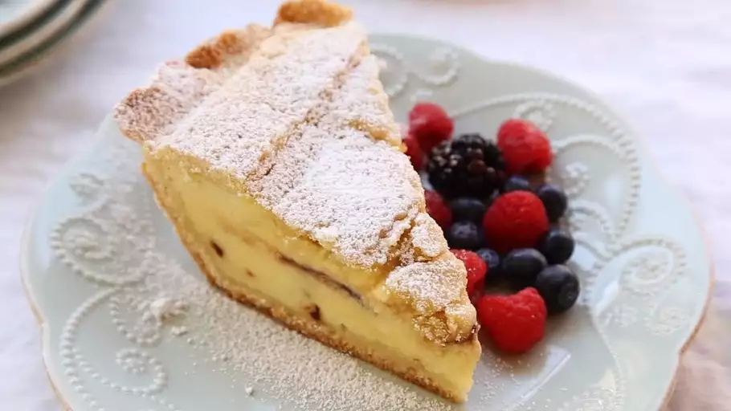

Ricotta Pie

Description:
This ricotta pie has a rich, sweet crust and mini chocolate chips
in the filling. My in-laws are Italian and they say that this is
the best pie. It is always requested for Christmas.
This old-fashioned ricotta pie recipe is rich, creamy, and tastes
just like it came from an Italian bakery.
Ingredients:
- Eggs: This Italian ricotta pie calls for a whopping 16 eggs (12 for the filling and four for the
crust).
- Sugar: You'll need three cups of white sugar (two for the filling and one for the crust).
- Vanilla: Vanilla extract enhances the overall flavor of the ricotta filling and the sweet crust.
- Ricotta: The dense, creamy filling calls for three pounds of ricotta cheese.
- Chocolate: Semisweet chocolate chips take the decadent filling up a notch, but you can leave them out if
you like.
- Flour: The sweet crust starts with four cups of all-purpose flour.
- Baking powder: Baking powder guarantees a tender and flaky pie crust.
- Shortening: Shortening (instead of butter) makes the pie crust easy to roll out and it holds its shape
well.
- Milk: Brush the pie crust with milk to give it a matte finish.
Steps:
- Make the filling: Beat the eggs, then add sugar and vanilla. Beat in the ricotta and the chocolate
chips.>
- Make the crust:Combine the dry ingredients, cut in the shortening, then beat in the egg mixture. Divide the
dough into balls, wrap in plastic, and chill.
- Roll and cut the crust: Roll out the dough balls and use them to line two prepared pie plates. Roll out the
remaining two balls and cut into strips.
- Assembke the pies: Fill each of the pies then top each pie with a lattice pattern. Brush the crust with
milk.
- Bake the pies: Bake the pies in the preheated oven until a knife inserted into the center comes out clean.
Cool on wire racks, then refrigerate.
Links